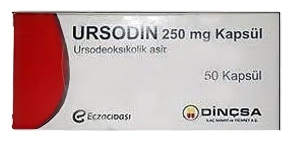

Ursodin 250 mg Kapsül, 100 Adet

Ne için kullanılır
KT · Bölüm 1URSODİN, beyaz toz veya granüller içeren, opak sert jelatin beyaz kapsüllerdir.
URSODİN’in etkin maddesi olan ve sığır safrasından elde edilen ursodeoksikolik asit, doğal olarak üretilen bir safra asidi olup, insan safrasında az miktarda bulunur.
URSODİN, “Safra bileşim ve akımını etkileyen ilaçlar” diye adlandırılan ve “gastrointestinal” (mide-bağırsak sistemi) grubuna dahil bir ilaçtır.
URSODİN aşağıdaki hastalıkların tedavisinde kullanılır: − Dekompanse karaciğer sirozunun (karaciğer fonksiyon bozukluğunun vücut tarafından telafi edilemediği evredeki yaygın uzun süreli karaciğer hastalığı) bulunmadığı 1 / 7
durumlarda, primer biliyer sirozun (safra kanallarının zarar görmesi sonucu ortaya çıkan ciddi bir karaciğer hastalığı) tedavisinde,
− Safra taşı bulunmasına rağmen safra kesesi işlevlerinin devam ettiği hastalarda, çapı 15 mm’den küçük, röntgen filminde gölgeli olmayan ve diğer alanlara göre daha beyaz görünen (radiolucent) kolesterol safra taşlarının eritilmesinde, − Karaciğer nakli yapılmış hastalarda safra taşı/kolestaz (karaciğer içi bir nedene bağlı olarak safra akışının yavaşlaması veya durması) önleyici tedavisinde, − Gebelik intrahepatik kolestazında (gebeliğin ikinci yarısında östrojenin safra asitlerinin atılımını engellemesi sonucu yaygın kaşıntı ile ortaya çıkan bir karaciğer hastalığı), − Kistik fibroz (Akciğer, böbrek veya pankreasta bozukluğa neden olan kalıtımsal bir hastalık) ile ilişkili hepatobiliyer hastalıkların (karaciğer, safra kanalları ve kesesi hastalıkları) tedavisinde.